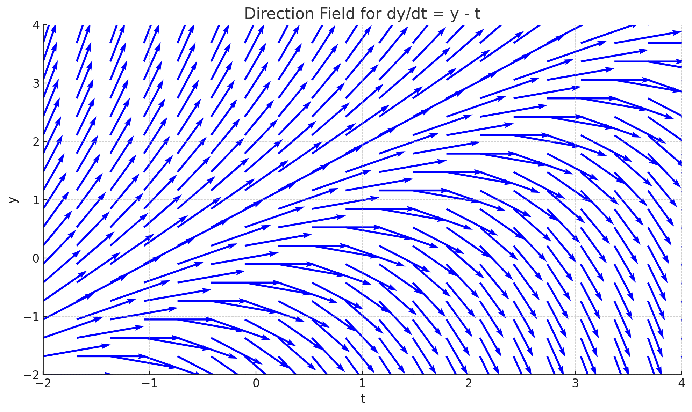

Ordinary Differential Equations (ODEs) – Enhanced
This expanded guide gives you everything you need on ODEs — definitions, visual plots, solver strategy, interactive simulation, and fully worked examples to make you exam-ready without picking up a textbook.
📊 1. Solution Behavior Plots
Below are example solution families and direction fields:

These help you visualize how solutions evolve depending on initial condition.
🔄 2. ODE Solver Flowchart
Is ODE Linear?
⬇️
Classify Order: 1st, 2nd, etc
⬇️
Select Method (IF, Separable, Char Eqn, Laplace)
⬇️
Solve General & Particular Solution
⬇️
Apply Initial Conditions
This is a common workflow engineers use when approaching any ODE problem.
💻 3. Interactive ODE Simulation
This plot shows the exact solution to dy/dt + 2y = 3 with y(0) = 1.
⚙️ 4. ODE Types & Definitions
- Linear: y and derivatives appear linearly (no products/powers)
- First-Order: dy/dt + P(t)y = Q(t)
- 2nd-Order: y″ + a₁ y′ + a₀ y = f(t)
- Homogeneous: RHS = 0
- Non-Homogeneous: RHS ≠ 0 (external forcing)
📘 5. First‑Order Linear ODEs (3 Examples)
Example 1: dy/dt + 4y = 0, y(0)=2 → y = 2 e^(−4t)
Example 2: dy/dt + 3y = 6 e^(2t), y(0)=1
μ=e^(3t), integrate, solve → y = (6/5) e^(2t) + (−1/5) e^(−3t)
Example 3: dy/dt = sin(t), y(0)=0 → integrate → y = 1−cos(t)
Use integrating factor for linear; direct integration for separable.
📘 6. Second‑Order ODEs (3 Examples)
Example 4 (Homogeneous): y″ + 6y′ + 9y = 0, y(0)=3,y′(0)=−6 → r²+6r+9=0 → r=−3 double → y = (3−0 t)e^(−3t)
Example 5 (Non‑Homogeneous): y″ + y = cos(t)
yₕ=C cos(t)+D sin(t); assume yₚ = At sin(t)+Bt cos(t); solve → final y applied ICs.
Example 6 (RLC circuit): L di/dt + R i + (1/C) ∫ i dt = V_in → differentiate → L di′ + R i′ + (1/C) i = V′ → solve analogous.
📝 7. Practice Quizzes
Q1: Solve dy/dt +2y=8, y(0)=0
Answer: y = 4−4 e^(−2t)
Q2: Solve y″ +4y=0, y(0)=0,y′(0)=2
Answer: y= (1/2)sin(2t)
Q3: Solve dy/dt = 3t², y(0)=1
Answer: y = t³ +1
Annotate classification (order/linear/homog) before solving — that earns marks and clarity!
← Back to Math & Physics